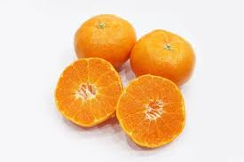

종합백신(DHPPL) : 다섯가지 질병에 대한 예방 접종 코로나 장염 : 코로나 바이러성 장염을 예방하는 백신 켄넬코프 : 켄넬코프 감기 예방 접종 광견병생후 3개월 이상 된 강아지에게 1회 접종한 후 6개월 후 재접정한다. 매년 추가접종을 해야한다. 태어난 첫 해에는 6~8주 후부터 2주 간격으로 총 5회 접종을 하고 그 다음부터는 1년에 한번씩 접종하면 된다.
애완견에 해로운 음식  닭뼈 닭뼈는 개의 이빨로 깨물수 없고 닭뼈를 그대로 삼키면 목이나 위를 찌를 수 있다 차가운 우유 강아지는 몸이 미숙하여 설사의 원인이 될 수있다 양파 개의 혈액에 한해 강한 독성을 가지고 있어 적혈구를 녹인다. 심하면 급성 빈혈로 목숨이 위태로울 수 있다. 파 종류는 모두 안좋다.